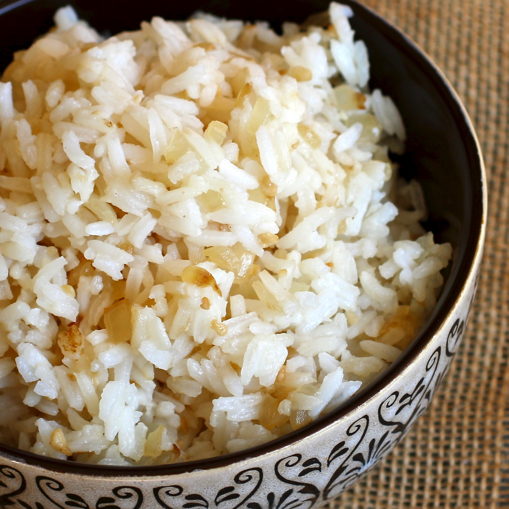

Garlic Fried Rice
Garlic Fried Rice

Directions
Step 1
- Combine the rice and water in a saucepan and bring to a boil. Cover, reduce heat to low, and simmer
until rice is tender and water is absorbed. Set aside to cool.
Step 2
- Melt the butter in a large skillet over medium-high heat. Add onion and garlic; cook and stir until
fragrant and lightly browned. Stir in rice and cook until coated and heated through. Remove from the
heat and stir in the lemon juice.
Ingredients
- 1 cup uncooked white rice
- 2 cups water
- 1 teaspoon butter
- 1 clove garlic, minced
- 1 small onion, minced
- 1 tablespoon lemon juice